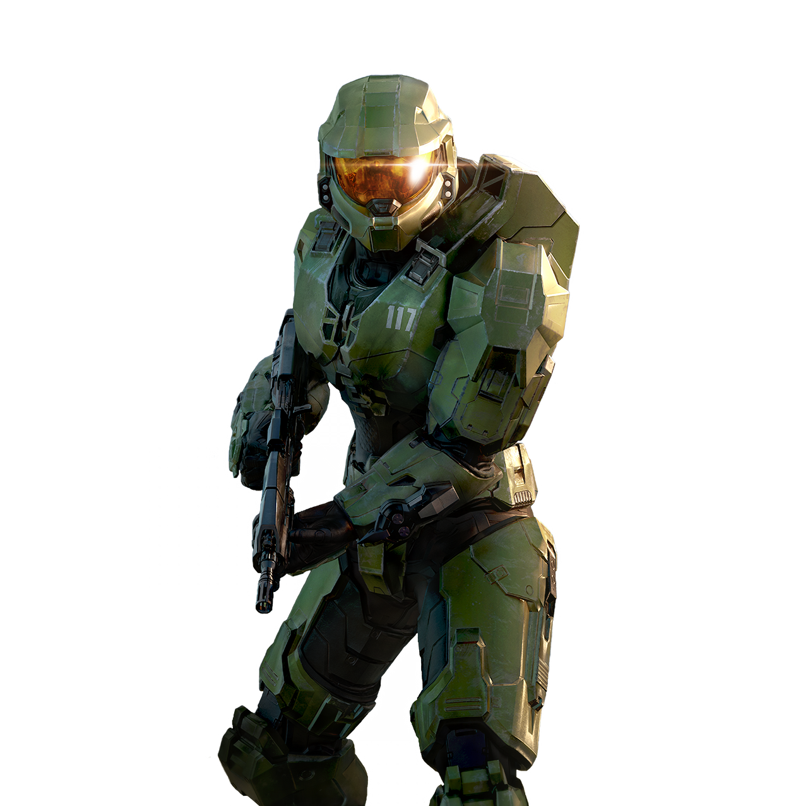

La Leyenda
El Jefe Maestro, conocido como John-117, es un supersoldado Spartan-II y el protagonista principal de la saga *Halo*. Conocido por su valentía, inteligencia táctica y liderazgo, ha sido una pieza clave en la lucha contra los Covenant, el Flood y otras amenazas que ponen en peligro a la humanidad.